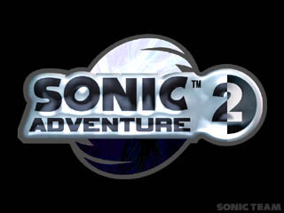

<script language='Javascript'>
function WinOpen(src)
{
	OpenWin = window.open(src, '6B8B4567')
	OpenWin.focus()
}
<!--
	window.open('https://web.archive.org/20011227000000/http://64.152.192.118/stuff_tc/popupbanner.html','6B8B4567','toolbar=no,location=no,directories=no,status=no,menubar=no,scrollbars=no,resizable=no,width=500,height=400');
// -->
</SCRIPT>
<HTML>

 <HEAD>
  <!-- $MVD$:app("MicroVision WebExpress","770") -->
  <!-- $MVD$:template("","0","0") -->
  <!-- $MVD$:color("18","80ff","Orange","1") -->
  <!-- $MVD$:color("19","ffd6ce","Lavender","1") -->
  <!-- $MVD$:fontset("Untitled Font Set 3","Verdana") -->
  <!-- $MVD$:fontset("Untitled Font Set 2","arial") -->
  <TITLE>PC downloads - Get cool sonic stuff for your computer!</TITLE>
  <META NAME="GENERATOR" CONTENT="MicroVision Development / WebExpress">
<bgsound src="Music/chromegadget.mid" loop="-1"> 
<STYLE>
 
                                      <!--
                                      A:link {color: black ; text-decoration: none;
                                      }
                                      A:visited {color: black; text-decoration: none}
                                      <!--A:hover   {text-decoration: none; color:
                                      black}--><!--A:hover   {text-decoration: underline;
                                      color: black}
input {  font-family: Verdana; font-size: 8pt; color: black; text-decoration: none; background-color: white}
-->
</STYLE>
 </HEAD>
 <BODY background="b.gif" bgproperties="fixed" TEXT="BLACK" LINK="BLACK" VLINK="BLACK" ALINK="BLACK" LEFTMARGIN="0" TOPMARGIN="0" BOTTOMMARGIN="0">


       <div align=center><!-- $MVD$:picsz("577","126") --><a href="main.html"></a></div>
       <table border=0 width="783" align=center><tr><td width=85%><div align=left>       
<font size=2 color=black><b><a href="frame.html"><font color=blue>MENU</a></font> >> Downloads >> <font color=green>Cool Sonic stuff to download</a></font><br>
&nbsp;&nbsp;&nbsp;&nbsp;<font color=black><b>>><a href="pcdownload.html"><font color=blue><b>PC Downloads</a></font> - <a href="vmusaves.html"><font color=blue>VMU Saves</a></font> - <a href="vmugames.html"><font color=blue><b>VMU Games</a></font> - <a href="sonicroms.html"><font color=blue>Sonic ROMS/Emus</a></font> - <a href="wallpaper.html"><font color=blue>Sonic Wallpaper</a></font><td width=15% VALIGN=TOP><div align=right><font size=2 color=black><b><a href="javascript:history.go(-1)
"><font color=blue>Go Back a Page</a></font></table>
     </TR>
    </TABLE>
       

      <TD HEIGHT="600" WIDTH="580" VALIGN=TOP CELLPADDING="5" CELLSPACING="2">
       <CENTER>
        <P ALIGN=CENTER>
         <FONT FACE="arial"><FONT SIZE="2"><FONT COLOR="LIGHTGREY">


<div align=center>
<p><table border=0 width=95%>
<p>
<div align=center>
<font face="comic sans ms" color=red><div align=center><h1><u>PC Downloads</u></font></h1></div>

<div align=center><B><font color=black>Here are the Downloads that you can access if you have a PC (obviously, hence the title ^_^). You'll find screensaver, fonts, Sonic game Demos and a whole lot more here, so take as long as you want here. This is your page only.<p>
Oh, and another thing, if you happen to be surfing the Sonic Stadium on your excellent Sega Dreamcast, don't bother trying to download these. They're for PC owners only and God knows what'll happen to your VMU. You have your own section of VMU downloads, so it's best you went back a page and chose the right link, eh?
Cool. Enjoy PC Sonic-a-holics! :)

<br>
<P><table border=0 width=90%><tr><td><div align=center><a href="Downloads/Sonic_Font.zip"><b><font size="2"><font color=blue>Sonic 3 Font</a><br><a href="Downloads/Sonic_Font.zip"></a><td><font size="2"><font color=black><b>The font's actually called Andes - But it's the font found on the Sonic 3 title cards.</table>

<P><table border=0 width=90%><tr><td><div align=center><a href="Downloads/Sonic_Theme_Pak.zip"><font size="2"><b><font color=blue>Sonic Theme Pack</a><br><a href="Downloads/Sonic_Theme_Pak.zip"></a><td>
<font size="2"><font color=black><b>Download this. It's a Desktop Theme Pack for your PC. Liven your computer up with anicursors and the like.</table>

<P><table border=0 width=90%><tr><td>
<div align=center><p><font size="2"><b><font color=red>
View the Sonic Adventure 2 Movie from E3 2000!<br>
<a href="https://web.archive.org/20011227000000/http://www.sonicteam.com/sonicadv2/mov/adv2_trailer_sample.mpg"><b><font color=blue>Small screen</a><br>
<a href="https://web.archive.org/20011227000000/http://www.sonicteam.com/sonicadv2/mov/adv2_trailer.mpg"><b><font color=blue>Large screen</a><br><td>
<font size="2"><font color=black><b>Well, its not really a download, but in case you missed it in Dreadknux's <a href="sonadv2pre.htm"><font color=blue>Sonic Adventure 2 Page</a></font>, its here for you to see. Enjoy!</table>

<h4><font color=#ffc000><u>*Send in your downloads to Dreadknux!*<br>
<a href=mailto:dreadknux@knuckles.co.uk><font color=blue>dreadknux@knuckles.co.uk</a></font><br>
<a href="uniform.html"><font color=blue>Fill in the form!</a></font></u></font></h4><B>

<p>

<div align=center><br>
<p>
</BODY>
</HTML>